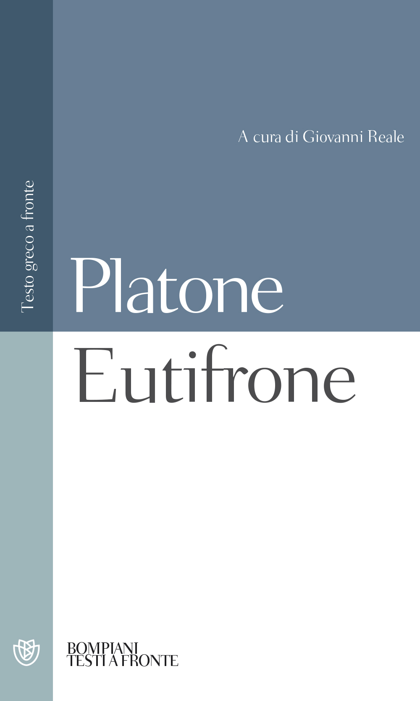

25:39 · 8 OPERE
Carlo Sini e Protagora
Il filo del discorso
Il video propone un dissenso argomentato da una conferenza di Carlo Sini sul relativismo. Dr Divago apre dichiarando stima per il filosofo, ma contesta l’idea che il confronto fra pensieri debba sospendere il giudizio sulla loro verità e sulle conseguenze politiche. Il caso di Hobbes introduce il tema della responsabilità delle idee; la parte centrale torna a Protagora e alle difficoltà di ricostruire gli autori antichi attraverso fonti indirette. La raccolta Diels–Kranz e il Nietzsche di Heidegger servono a distinguere testi e interpretazioni. Attraverso due letture del Teeteto, il relatore oppone la ricerca di una dimostrazione alla sola forza persuasiva e discute il rapporto fra sensazione e sapere. Una digressione sulla matematica antica estende il confronto al ruolo della prova, prima del ritorno al relativismo contemporaneo. Nella conclusione, Orwell e un’intervista a Jaspers accompagnano l’appello a conservare la possibilità di convincere mediante ragioni condivise. La tesi che la sofistica sia all’origine della degenerazione culturale e politica moderna è la diagnosi di Dr Divago; la scheda non la assume come spiegazione storica dimostrata.
I libri nel discorso

Nietzsche
Copertina: Adelphi, 2018 · edizione di riferimento
Nietzsche di Heidegger è nominato come esempio di un’interpretazione distinta dall’autore studiato.
Passaggio 9:18 ↗ · Fonti e libro ↗
I Presocratici (Die Fragmente der Vorsokratiker)
Copertina: Bompiani · 2006 · a cura di Giovanni Reale, con testi originali a fronte
Immagine autentica dell’opera, controllata visivamente; l’edizione di riferimento non è attribuita al filmato.
La raccolta Diels–Kranz è nominata come fonte per testimonianze e frammenti su Protagora.
Passaggio 9:59 ↗ · Fonti e libro ↗
Protagora
Copertina: Bompiani · Testi a fronte · 2001 · a cura di Giovanni Reale
Immagine autentica dell’opera, controllata visivamente; l’edizione di riferimento non è attribuita al filmato.
Il Protagora è annunciato come dialogo di Platone, distinto dalla persona storica del sofista.
Passaggio 11:15 ↗ · Fonti e libro ↗
Teeteto, o sulla scienza
Copertina: Feltrinelli · 1994 · traduzione di Luca Antonelli, introduzione di Salvatore Natoli, saggio di Davide Spanio
Immagine autentica dell’opera, controllata visivamente; l’edizione di riferimento non è attribuita al filmato.
Il Teeteto è annunciato, con richiamo a 161c e lettura di due passi sulla percezione e sulla dimostrazione.
Passaggio 11:36 ↗ · Fonti e libro ↗
Papiro matematico Rhind
Fotografia di un dettaglio del papiro matematico Rhind: British Museum · EA10057 · fotografia di un dettaglio del papiro antico
Fotografia autentica di una parte del recto della sezione EA10057. È un documento antico, non una copertina editoriale, un frontespizio o la riproduzione completa delle due sezioni. Provenienza fotografica dichiarata nella scheda Commons; datazione e identità riscontrate presso il museo.
Il papiro Rhind è annunciato come esempio della matematica egizia anteriore a quella greca.
Passaggio 16:24 ↗ · Fonti e libro ↗
La teologia dell’aritmetica (Theologumena arithmeticae)
Copertina del volume che comprende La teologia dell’aritmetica: Rusconi · Il numero e il divino · 1995 · a cura di Francesco Romano
Fotografia autentica della raccolta Rusconi, con tre testi greco-italiani a cura di Francesco Romano. La voce riguarda il testo anonimo tradizionalmente attribuito a Giamblico, non l’intero volume e non una paternità certa. Edizione non identificata nel filmato.
Il titolo greco Theologumena arithmeticae è riconoscibile e attribuito dal relatore a Giamblico; la paternità è precisata bibliograficamente.
Passaggio 17:52 ↗ · Fonti e libro ↗
1984
Identificazione probabile
Copertina: Newton Compton · edizione illustrativa
Orwell e la formula sul diritto di dire che due più due fa quattro richiamano 1984; il titolo non è pronunciato.
Passaggio 21:58 ↗ · Fonti e libro ↗
Eutifrone
Copertina: Bompiani · Testi a fronte · 2001 · a cura di Giovanni Reale
Immagine autentica dell’opera, controllata visivamente; l’edizione di riferimento non è attribuita al filmato.
L’Eutifrone è nominato nella conclusione sui concetti etici.
Passaggio 22:37 ↗ · Fonti e libro ↗